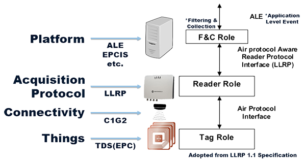
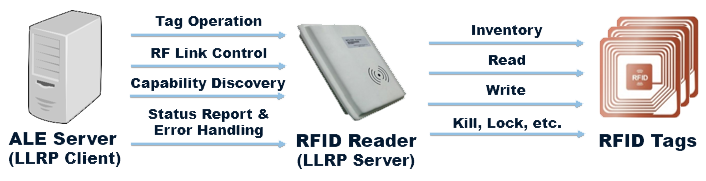
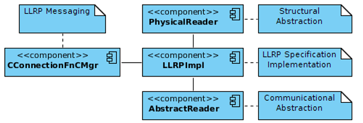

Oliot LLRP (Low Level Reader Protocol) Reader
Oliot LLRP Reader is a reader implementation that supports EPCglobal Low Level Reader Protocol (LLRP).

LLRP is a protocol between ALE Server and RFID Reader which,
- defines control of RFID readers up to low level details of RFID
- defines inventory, read, write, and other access commands for tags
- defines capabilities of reader device
- defines status reporting and error handling

Oliot LLRP Reader is a reader implementation that supports LLRP standard with some extentions. It is composed of following components

- Core Operational Component
- Core operations of LLRP and other supplementary operations
- Structural Abstraction Component
- Abstracts the structure of the real-world reader
- Useful for extension of current LLRP standard
- Communicational Abstraction Component
- Abstracts the communication with the real-world reader
- Useful for supporting various kinds of Tag Readers
- Messaging Component
- Abstracts LLRP messaging between reader and ALE server
Oliot LLRP Reader is able to support adaptation of various kinds of connectivity and protocols. So if a thing has its own unique GS1 code, it can be collected by reader with some adaptation and utilized within EPCglobal framework.
Contributors
- Sehyeon Heo, Ph.D student of KAIST